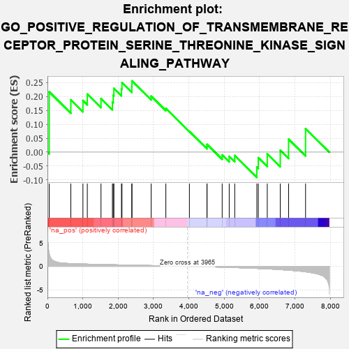
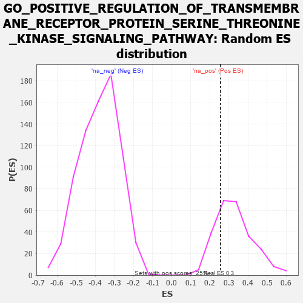

| | | Dataset | 7d |
| Phenotype | NoPhenotypeAvailable |
| Upregulated in class | na_pos |
| GeneSet | GO_POSITIVE_REGULATION_OF_TRANSMEMBRANE_RECEPTOR_PROTEIN_SERINE_THREONINE_KINASE_SIGNALING_PATHWAY |
| Enrichment Score (ES) | 0.25600988 |
| Normalized Enrichment Score (NES) | 0.7812931 |
| Nominal p-value | 0.770751 |
| FDR q-value | 0.9170939 |
| FWER p-Value | 1.0 |
Table: GSEA Results Summary

Fig 1: Enrichment plot: GO_POSITIVE_REGULATION_OF_TRANSMEMBRANE_RECEPTOR_PROTEIN_SERINE_THREONINE_KINASE_SIGNALING_PATHWAY
Profile of the Running ES Score & Positions of GeneSet Members on the Rank Ordered List
| PROBE | GENE SYMBOL | GENE_TITLE | RANK IN GENE LIST | RANK METRIC SCORE | RUNNING ES | CORE ENRICHMENT | | 1 | TGFB3 | | | 49 | 2.654 | 0.2168 | Yes |
| 2 | HES5 | | | 661 | 0.571 | 0.1879 | Yes |
| 3 | MEN1 | | | 1003 | 0.483 | 0.1856 | Yes |
| 4 | NUP93 | | | 1127 | 0.459 | 0.2086 | Yes |
| 5 | INHBB | | | 1514 | 0.388 | 0.1927 | Yes |
| 6 | GATA4 | | | 1837 | 0.330 | 0.1799 | Yes |
| 7 | SMAD4 | | | 1860 | 0.326 | 0.2045 | Yes |
| 8 | NEO1 | | | 1879 | 0.323 | 0.2293 | Yes |
| 9 | FOXD1 | | | 2093 | 0.292 | 0.2270 | Yes |
| 10 | BMP7 | | | 2107 | 0.290 | 0.2497 | Yes |
| 11 | PELO | | | 2386 | 0.247 | 0.2355 | Yes |
| 12 | HIPK2 | | | 2389 | 0.247 | 0.2560 | Yes |
| 13 | ACVR1 | | | 2932 | 0.161 | 0.2013 | No |
| 14 | UBE2O | | | 3348 | 0.097 | 0.1573 | No |
| 15 | PARP1 | | | 4014 | -0.010 | 0.0744 | No |
| 16 | ILK | | | 4510 | -0.096 | 0.0202 | No |
| 17 | SNW1 | | | 4514 | -0.096 | 0.0279 | No |
| 18 | EP300 | | | 4941 | -0.186 | -0.0101 | No |
| 19 | FLCN | | | 5140 | -0.235 | -0.0152 | No |
| 20 | FKBP8 | | | 5296 | -0.270 | -0.0121 | No |
| 21 | STK11 | | | 5922 | -0.443 | -0.0535 | No |
| 22 | SH2B1 | | | 5963 | -0.459 | -0.0200 | No |
| 23 | SMAD2 | | | 6216 | -0.541 | -0.0062 | No |
| 24 | INHBE | | | 6584 | -0.701 | 0.0065 | No |
| 25 | GIPC1 | | | 6819 | -0.826 | 0.0465 | No |
| 26 | MSX2 | | | 7299 | -1.171 | 0.0846 | No |
Table: GSEA details [plain text format]

Fig 2: GO_POSITIVE_REGULATION_OF_TRANSMEMBRANE_RECEPTOR_PROTEIN_SERINE_THREONINE_KINASE_SIGNALING_PATHWAY: Random ES distribution
Gene set null distribution of ES for GO_POSITIVE_REGULATION_OF_TRANSMEMBRANE_RECEPTOR_PROTEIN_SERINE_THREONINE_KINASE_SIGNALING_PATHWAY